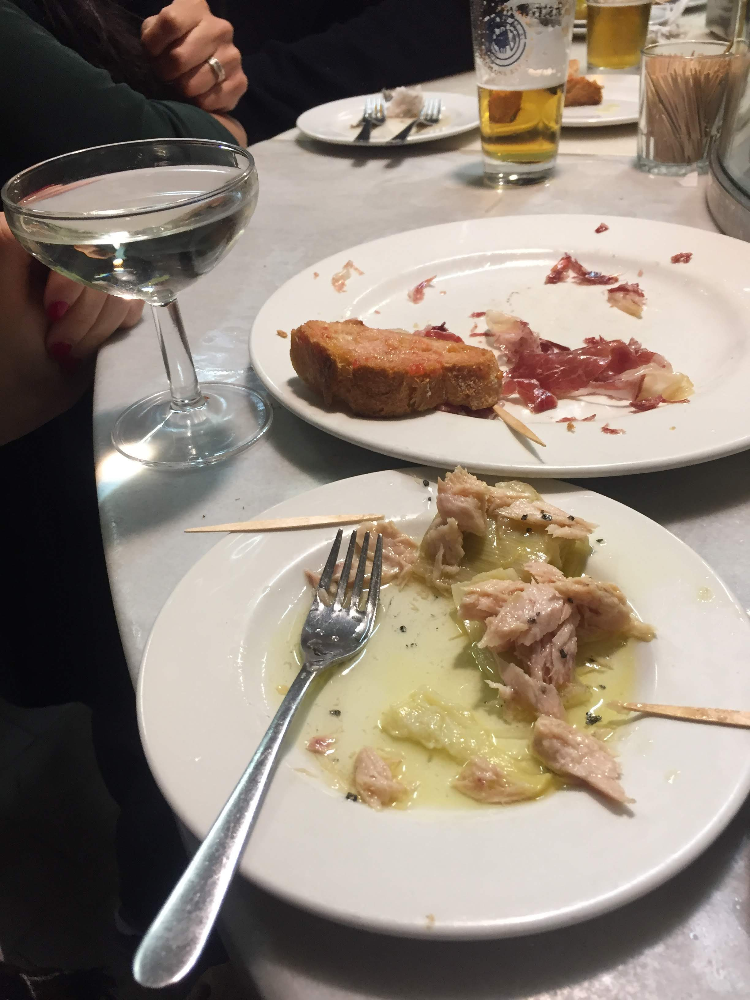

The bar
El Xampanyet has been on Carrer de Montcada since 1929. The bar does not look like it has changed much. Tiled walls, a long zinc counter, bottles stacked behind, pintxos under glass. It is loud in the way that a bar is loud when everyone in it is having a good time. You will need to push in a little to get served. This is fine.

The house cava. One-litre flip-top. Founded 1929.
The cava
Order the house cava. It comes in a one-litre bottle with a flip-top lid, poured into a coupe glass. The label says Estevet — their own label, made in Girona, served here and nowhere else. Cold, slightly sweet, extremely Catalan. This is what you drink here. Don't overthink it.
The bottle will sit on the bar and they will top you up. You will not check the price until it is too late and it will not matter.
The food
Point at things on the bar. Anchovies, tuna in olive oil with black pepper, jamón with pan amb tomàquet. Everything is good. The tuna especially — white, flaky, sitting in a pool of olive oil that you will want to mop up with bread. Order more than you think you need.
Eat enough of this and you won't need dinner. You might anyway.

Tuna in olive oil. Jamón. Pan amb tomàquet. Point and order.
"Go here first. Get your feet on the ground. Then figure out the rest of Barcelona."
— Dave
The street
Carrer de Montcada is one of the best streets in the old city — medieval palaces turned into museums, the Picasso Museum fifty metres away, the waterfront a short walk south. El Xampanyet is in the middle of all of it. The street fills up on weekend afternoons and this bar is at the centre of that energy. It will be busy. Stand at the bar if you have to. This is the aesthetic you came for, so just stay here until you have your feet on the ground.